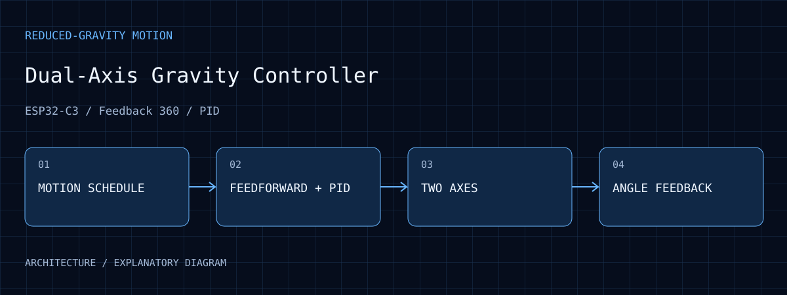
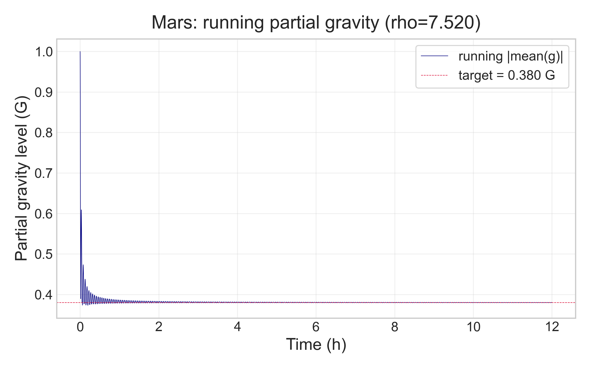

控制整合
公開介紹包含角度／速度解算、前饋／PID、運動排程與零點確認。
Dual-Axis Gravity Controller
以角度回授、速度估測、feedforward 與 PID 控制雙軸連續旋轉伺服，研究重力向量方向隨時間變化的運動控制。

01 / PURPOSE
控制雙軸旋轉的角度與速度，供重力向量時間平均相關研究使用。
02 / ARCHITECTURE
以目標角度與速度描述雙軸運動，區分不同研究模式。
前饋與 PID 根據回授修正輸出，協調目標與實際運動。
ESP32-C3 驅動雙軸 Feedback 360 連續旋轉伺服，開機確認零點。
角度回授與速度估測提供控制誤差及運動行為的觀察入口。
03 / WORKFLOW
啟動後建立初始參考，再進入指定排程。
依研究模式更新兩軸的目標運動。
由回授計算角度與速度，結合前饋／PID 調整驅動。
對照目標、回授及時間序列，分析追蹤誤差與邊界行為。
04 / EVIDENCE
公開介紹包含角度／速度解算、前饋／PID、運動排程與零點確認。
平台用於重力向量隨時間改變的研究；不同控制模式屬同一研究脈絡。
旋轉條件與實際重力環境不同，特定等效條件需另有模型與量測支持。
既有圖顯示時間平均重力向量量值逐漸接近設定目標；曲線屬模型輸出，並非裝置直接量得的物理重力降低。

原進度報告保存的 running |mean(g)| 曲線，目標線為 0.380 G。此為模型模擬，需連同時間平均定義與初始暫態解讀。
查看原圖 ↗05 / ANALYSIS
分別觀察馬達轉動不足以描述空間方向的變化。排程、角度與時間必須能對照，才能分析整體運動。
前饋提供驅動基礎，回授修正負載與速度差異。比較控制策略時應固定機構、負載與取樣條件。
控制器先回答機構如何運動；樣品感受到的條件仍與位置、旋轉中心和實驗配置相關。
06 / REPRODUCE
07 / LIMITS
研究程式未公開；旋轉不等同真正失重，控制設定不代表已實測達成特定重力條件。
08 / SOURCES
入選圖像保留原始畫面內容，圖說分別註明原型照片、操作介面、歷史紀錄、分析輸出或模擬。